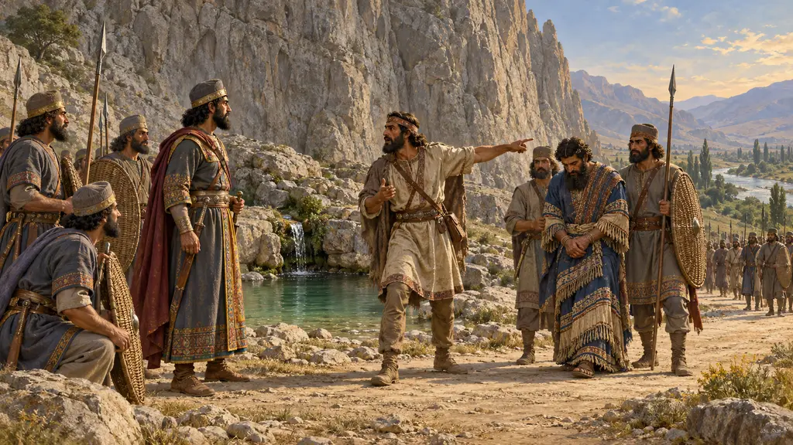
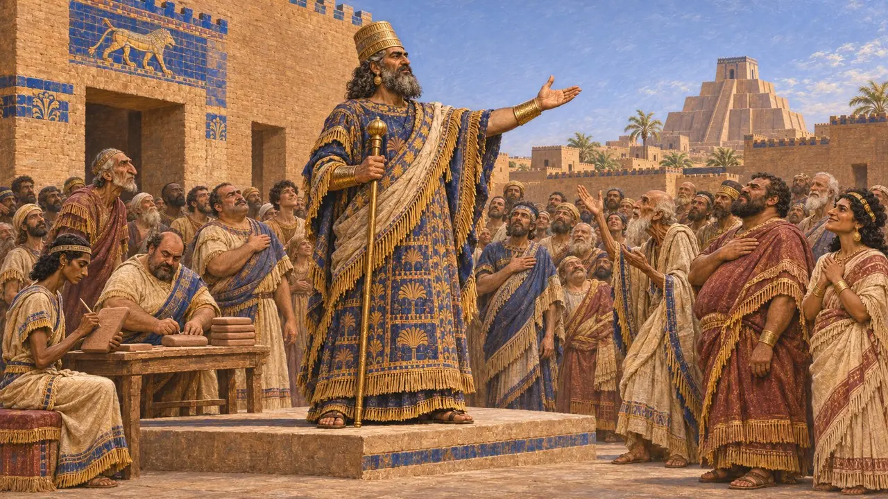
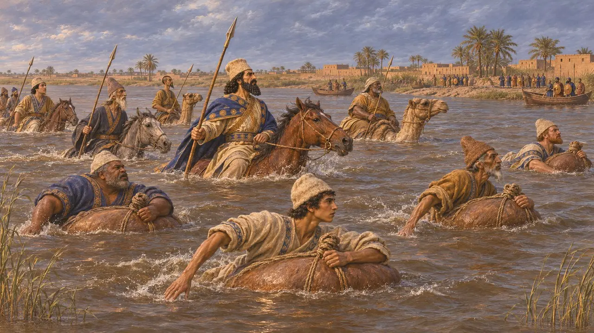
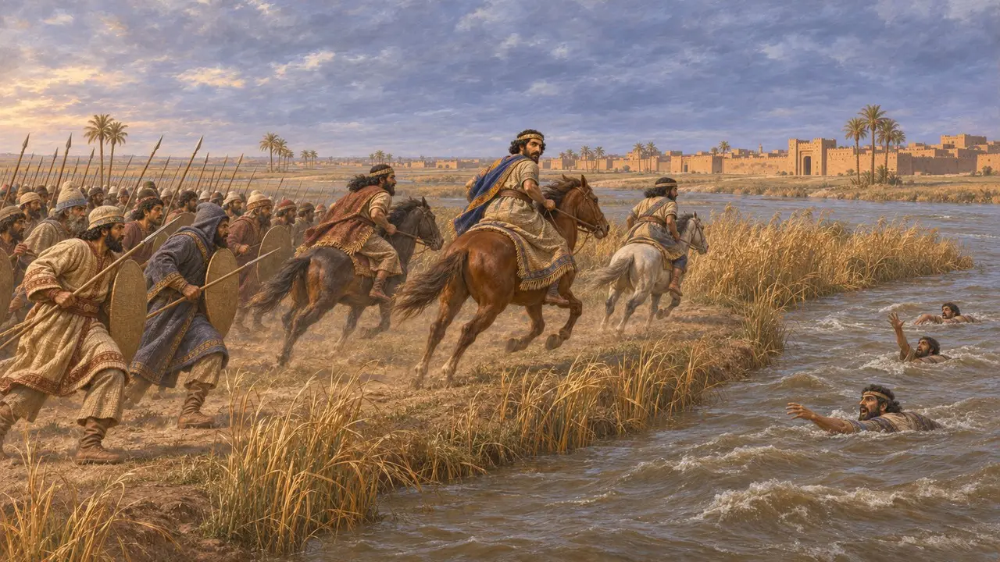
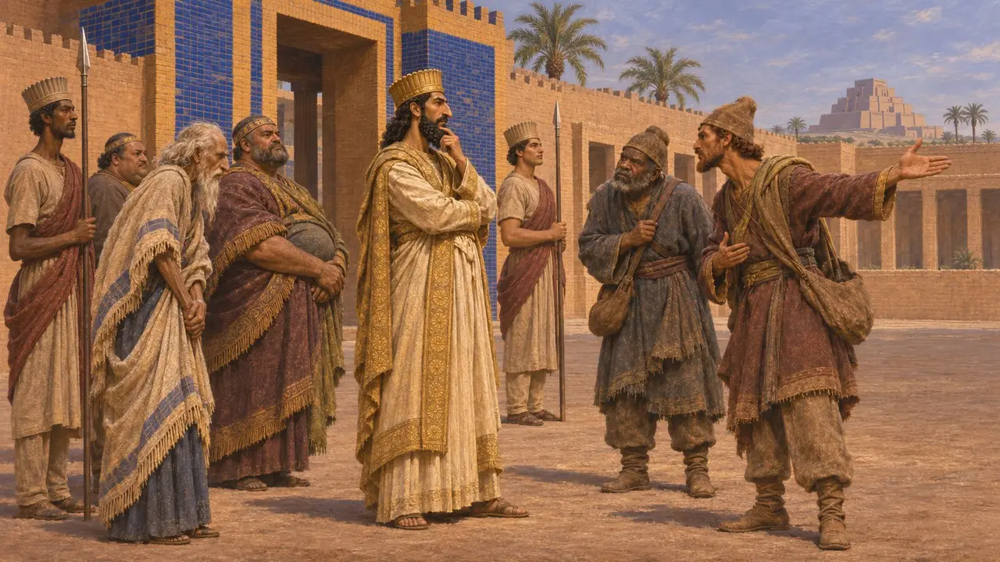
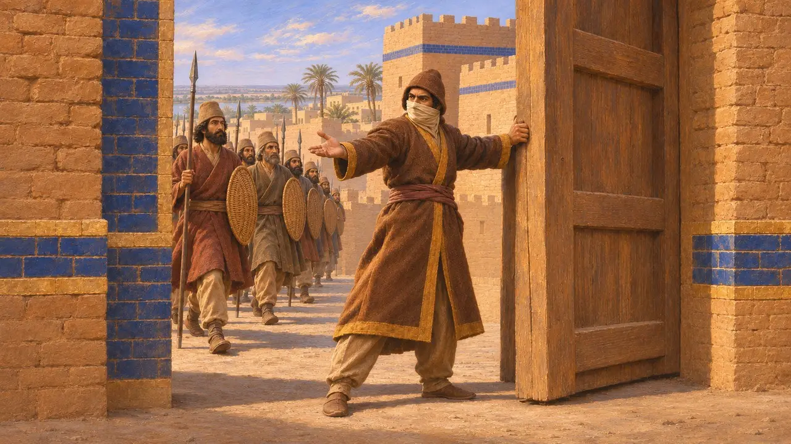

Ansiklopedi › Savaşlar ve olaylar

Nidintu-Bel'in isyanı
Kraliyet adı altında bir Babil ayaklanması, Dareios tarafından bastırıldı, Babilonya, MÖ 522
Oyunda: Bölüm 3: Yalan
MÖ 522 sonbaharında, Dareios'un Gaumata dediği adamı öldürmesinden kısa süre sonra, Nidintu-Bel adında bir Babilli, son yerli kral Nabonidus'un oğlu Babilli Nabukadnezar olduğunu öne sürdü ve Babil onu kabul etti. Dareios güneye bizzat yürüdü, Aralık ayında iki savaş kazandı ve şehri aldı. Bu isyan, en zengin eyalet üzerindeki Pers egemenliğinin hâlâ ne kadar kırılgan olduğunu gösterdi; Dareios'un bastırmak zorunda kaldığı iki Babil ayaklanmasının ilkiydi.
Oyunda: Oyun isyanı, Behistun yazıtından alınmış bir Kronik iletisiyle bildirir: sahte Nabukadnezar, Dicle'deki ve Zazana'daki savaşlar ve Babil'in alınışı. Tarihini yalnızca 522 olarak verir.

Yeni bir Nabukadnezar
BelgelerdeDareios, Babilli Ainaira oğlu Nidintu-Bel'in Babil'de ayaklandığını, Nabonidus oğlu Nabukadnezar olduğunu iddia ettiğini ve Babillilerin ona geçtiğini söyler. O döneme ait Babil ticaret tabletleri bunu doğrular: 522'nin sonlarında birkaç ay boyunca sözleşmeler, bugün III. Nabukadnezar denen Kral Nabukadnezar'ın saltanatına göre tarihlendirilmiştir.
DB §16; Babylonian dated tablets

Dicle'nin geçilişi
BelgelerdeDareios Babil'e bizzat gitti. Nidintu-Bel'in ordusunun, geçilemeyen Dicle'yi tuttuğunu ve nehirde teknelerinin bulunduğunu söyler. Dareios, askerlerinin bir kısmını şişirilmiş tulumlara bindirdi, bir kısmını deve ve atlara bindirip karşıya geçti ve Babillileri, 26 Assiyadiya'ya, yani yaklaşık 13 Aralık 522'ye tarihlediği bir savaşta yendi.
DB §18

Zazana ve Babil'in düşüşü
Belgelerdeİkinci bir savaş, Fırat kıyısındaki Zazana kasabasında, 2 Anamaka'da, yaklaşık 18 Aralık'ta yapıldı. Dareios, düşmanın bir kısmının nehir tarafından sürüklendiğini söyler. Nidintu-Bel birkaç atlıyla Babil'e kaçtı; Dareios şehri alıp onu orada öldürttü. Behistun kabartmasında, bağlı asi kralların dizisinde ikinci sırada durur; yanındaki yazıt onun yalanını adlandırır.
DB §19-20; DBd

Sorgulanan tarihler ve iddialar
TartışmalıDareios kraliyet iddiasının bir yalan olduğunu söyler ve başka hiçbir kaynak bunu kesinleştirmez. Tarihçiler ad seçimini, yerli Babil krallığının hâlâ bağlılık uyandırdığının işareti sayar. Hükümdarlığının süresi tabletlerden hareketle tartışılır; Babil'in MÖ 522 Aralık sonunda mı yoksa MÖ 521 başında mı düştüğü de belirsizdir. Dareios, kendisi Babil'deyken birçok ülkenin ona karşı ayaklandığını söyler; bu yüzden kalışı metnin belli ettiğinden daha uzun olmuş olabilir.
DB §21; P. Briant, From Cyrus to Alexander, 2002

Zopyros ve uzun kuşatma
Geç dönem efsanesiHerodotos, Dareios'a karşı çıkan ve ancak yaklaşık yirmi ay süren bir kuşatmadan sonra sona eren bir Babil isyanını anlatır. Pers soylusu Zopyros kendi burnunu ve kulaklarını keser, firari rolü yapıp kapıları açar; Dareios da ardından ileri gelenlerden yaklaşık üç bin kişiyi kazığa oturtur. Bu hikâye, Dareios'un karşılaştığı iki Babil isyanının hiçbirine tam oturmaz. Kimileri onu Kserkses döneminin ayaklanmalarına bağlar, ancak çoğu kişi onu tarih değil, bir sadakat öyküsü sayar.
Herodotus 3.150-160
Kaynaklar
- DB §16-21
- R. G. Kent, Old Persian: Grammar, Texts, Lexicon, 1953
- R. Schmitt, The Bisitun Inscriptions of Darius the Great: Old Persian Text, 1991
- A. Kuhrt, The Persian Empire: A Corpus of Sources from the Achaemenid Period, 2007
- P. Briant, From Cyrus to Alexander, 2002
- Herodotus 3.150-160